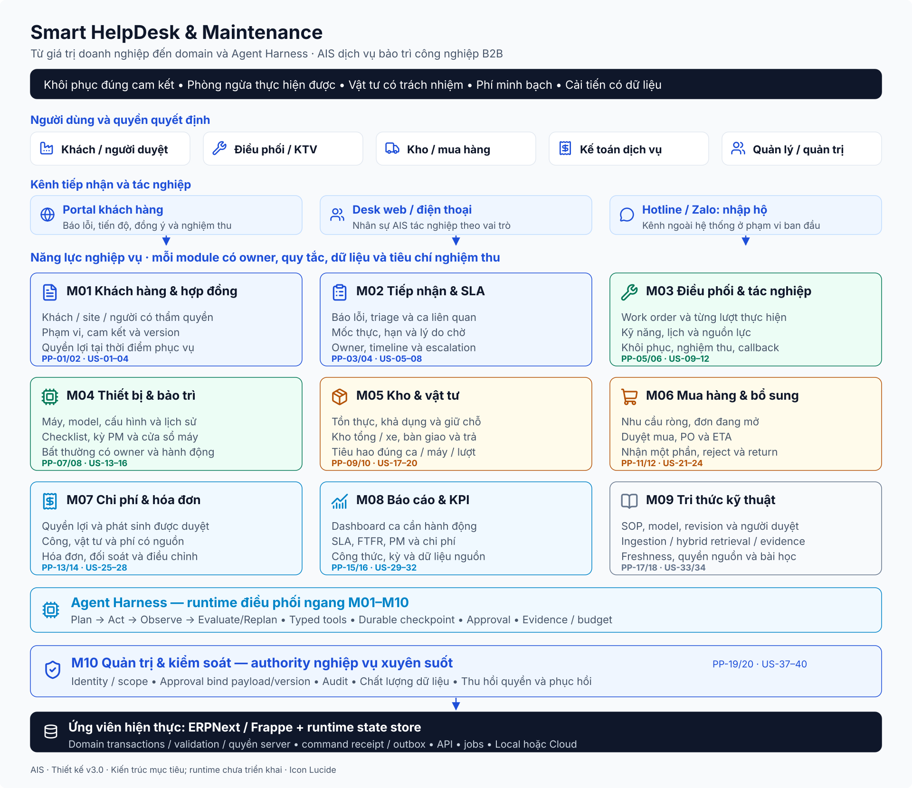

Sổ sơ đồ · Smart HelpDesk & Maintenance
Smart HelpDesk & Maintenance · Sổ sơ đồ
Thiết kế v3.0: 10 module domain và Agent Harness riêng. Chọn tổng quan, workflow, dữ liệu hoặc runtime; phóng to khi cần.
M09 là tri thức; Harness là runtime ngang. Diagram là thiết kế mục tiêu, không bằng chứng runtime đã đạt.
